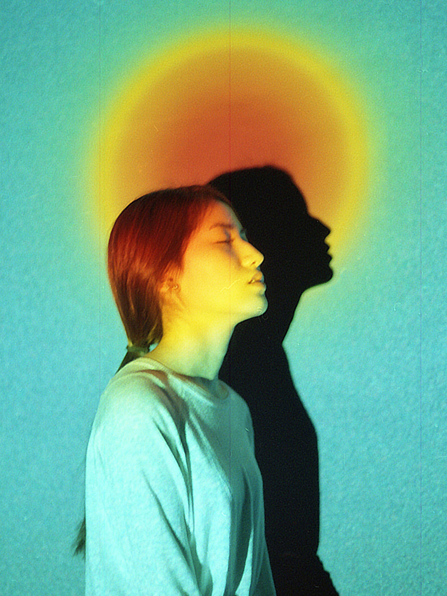

1A. Project Brief
An editorial that portrays the feeling of loneliness.
1B. Intro
In this project, the challenge is to create two magazine spreads for a publication. The spreads are to be treated as a feature article, with the first spread as the feature article opening and the second spread continuing the article.
The goal of this project is to research a target market and produce visual communication material tailored for that market, use words and images strategically and control numerous magazine page elements to create clear hierarchies of information.
“Lost in Space” is an editorial that addresses the lack of mental support within the LGBTQ2+ youth community. I will be art directing a photoshoot that portrays the pain and struggles of coping with mental health issues and everyday stresses, and creating an infographic that reinforces the importance of having a safe place for LGBTQ2+ youth.
2A. Challenge
To create two magazine spreads with an infographic and an art direction that appeals to the target demographic.
2B. Sketches
To avoid having too many magazine page elements, I started exploring different layouts to construct a clear hierarchy of information.

2C. Photoshoot Planning
2D. The Outcome


1 / 6
3A. Experiment
Created mockups to get a better understanding of how much space I was working with, I started to explore the position of my magazine page elements and tried different colors and fonts. This not only helped me visualize the narrative that I was developing, but also made creating a clear hierarchy easier.
Problems:
1. Overcrowded layouts, way too busy
2. Lack of consistency and dominant color scheme
3. Photographs are overpowering other page elements
3B. Style Tiles
To keep in tone with the overall atmosphere of the photos, I chose bright colors for my infographic that would imitate the vibrant hues of the photoshoot background.
I used Neue Machina for its geometric and futuristic qualities, and Arcon for the body text since it’s smooth and friendly to look at.
4A. Infographic
4B. Final spreads
The final spreads is a cleaner version of my mockups, with a more dominant color scheme that compliments my infographic and photographs. I also utilized more negative space to construct a clear visual hierarchy with enhanced legibility and readability.